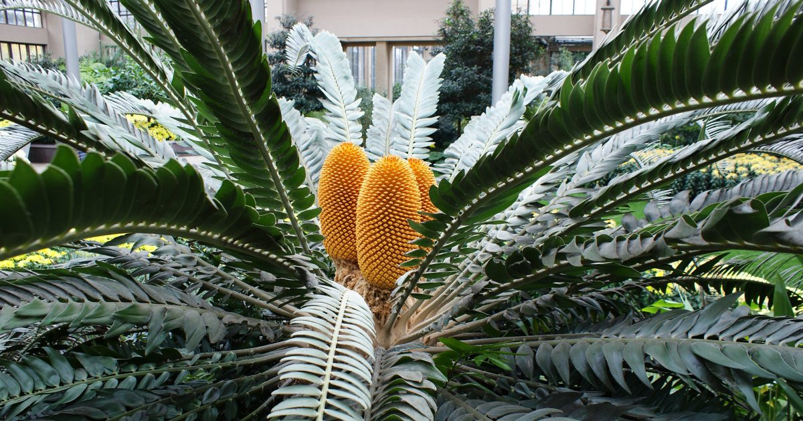
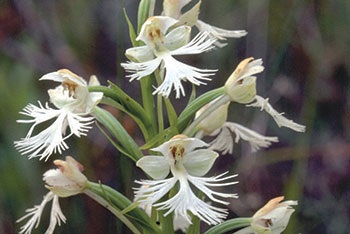
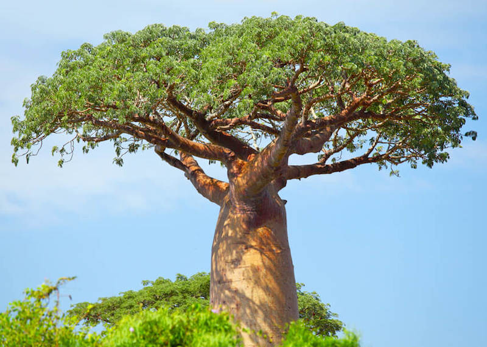
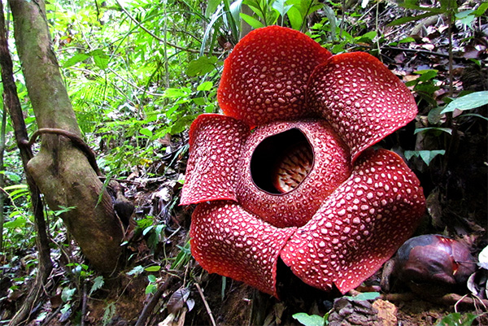

Plant biodiversity is incredibly important for the health and well-being of our planet, my friend! Let me tell you why in a bit more detail. First and foremost, plant biodiversity helps maintain the balance and functioning of ecosystems. Different plant species provide habitats, food sources, and shelter for a wide variety of animals, insects, and microorganisms. This interconnectedness forms a complex web of life, where each species plays a vital role. When plant biodiversity is rich and diverse, it ensures that ecosystems are resilient and able to withstand disturbances such as climate change, disease outbreaks, or natural disasters. Another significant benefit of plant biodiversity is its contribution to food security. A wide range of plant species means a greater variety of crops that can be cultivated for human consumption. This diversity helps ensure a stable and nutritious diet for communities around the world. Additionally, different plant species have varying traits and genetic characteristics, which can make them more resistant to pests, diseases, and environmental conditions. This genetic diversity is crucial for breeding new crop varieties that are more resilient and adaptable to changing climates and agricultural challenges. Plant biodiversity also plays a vital role in supporting human health and medicine. Many plant species contain valuable compounds that have medicinal properties. Traditional medicine systems around the world rely on plant-based remedies for treating various ailments. Additionally, numerous modern pharmaceuticals are derived from plant compounds. By preserving plant biodiversity, we have a greater chance of discovering new medicines and improving our understanding of the natural world. Furthermore, plants are essential for maintaining the balance of our planet's climate. Through the process of photosynthesis, plants absorb carbon dioxide from the atmosphere and release oxygen. This helps regulate the levels of greenhouse gases, mitigating the impacts of climate change. Additionally, forests and other vegetated areas act as carbon sinks, storing vast amounts of carbon and reducing the concentration of greenhouse gases in the atmosphere. Plant biodiversity also offers important economic benefits. Many industries rely on plant resources for their products, such as timber, fibers, oils, and dyes. These industries not only provide employment opportunities but also contribute to local and national economies. Additionally, ecotourism and nature-based tourism thrive in areas with rich plant biodiversity, attracting visitors and generating revenue. Preserving plant biodiversity is a shared responsibility. Unfortunately, human activities such as deforestation, habitat destruction, pollution, and climate change pose significant threats to plant species. It is crucial that we take action to conserve and protect plant biodiversity. This can be achieved through various means, including establishing protected areas, promoting sustainable land management.


CAUSES OF PLANT EXTINCTION
1.
Habitat loss: Plants face extinction when their natural homes are destroyed or fragmented due to activities like deforestation, urbanization, or agriculture. Without suitable habitats, plants struggle to survive and reproduce.
2. Invasive species: Non-native plants can invade ecosystems, outcompeting native plants for resources like sunlight, water, and nutrients. This disrupts the balance of the ecosystem and can lead to the decline and extinction of native plant species.
3. Climate change: Rising temperatures, altered rainfall patterns, and extreme weather events can negatively impact plant growth, flowering, and seed production. Some plants may not be able to adapt quickly enough, leading to their decline and eventual extinction.
4. Human activities: Overexploitation of plants for purposes like logging, medicine, or horticulture can deplete their populations, making it challenging for them to recover. Illegal trade of plants can also contribute to their extinction.
5. Pollution: Air and water pollution can harm plants by damaging their leaves, inhibiting photosynthesis, and affecting their reproductive processes. Toxic chemicals released into the environment can have detrimental effects on plant health.
6. Lack of awareness and conservation efforts: Without sufficient attention and conservation measures, plant species may not receive the necessary protection and preservation to prevent their extinction. Raising awareness about the importance of plant biodiversity and implementing conservation strategies is crucial for their survival.
ENDANGERED PLANTS

Wood's Cycad
Wood's Cycad, also known as *Encephalartos woodii*, is considered extinct in the wild, with no known surviving specimens in its native South African habitat. The species is now only found in cultivation, originating from a single male plant discovered in 1895. Efforts to conserve it are complicated by its lack of a female counterpart.

Pringle's Monardella (Monardella pringlei)
Pringle's Monardella (Monardella pringlei), a rare mint family plant native to California, faces extinction due to habitat loss from urbanization, agriculture, and invasive species. With its small population restricted to the Transverse Ranges, conservation efforts focus on protecting remaining habitats and restoring native plant communities to ensure its survival.

Attenborough's Pitcher Plant
Attenborough's Pitcher Plant (Nepenthes attenboroughii), a carnivorous plant discovered in the Philippines, is critically endangered due to its limited range, habitat destruction, and poaching. Named after Sir David Attenborough, this unique plant requires conservation actions to protect its montane forest habitat from logging and agricultural expansion.

Western Prairie Fringed Orchid
The Western Prairie Fringed Orchid (Platanthera praeclara), native to North American tallgrass prairies, faces extinction from habitat loss, agricultural development, and invasive species. Its fragmented populations depend on specific pollinators and habitat conditions, making conservation efforts vital to protect and restore prairie ecosystems and maintain its fragile existence.

Café Marron
Café Marron (Ramosmania rodriguesii), a plant endemic to Rodrigues Island in Mauritius, was once thought extinct until a single plant was found in 1980. Now critically endangered, its survival depends on cultivation efforts and habitat restoration, highlighting the importance of preserving rare species against habitat destruction and invasive threats.

Baobab Trees
Baobab trees, iconic giants of African landscapes, face extinction threats from climate change, habitat loss, and human activities. Some of the oldest and largest specimens have recently died, raising concerns about their future. Conservation strategies focus on protecting habitats, researching climate resilience, and planting new trees to ensure their survival.

Texas Wild Rice
Texas Wild Rice (Zizania texana) is a critically endangered aquatic grass found only in the San Marcos River, Texas. Habitat degradation, reduced water flow, and pollution threaten its survival. Conservation efforts focus on maintaining water quality and quantity, managing invasive species, and cultivating the plant to bolster wild populations.

Karomia gigas
Karomia gigas, a critically endangered tree species native to East Africa, faces extinction due to habitat loss from deforestation and agricultural expansion. With fewer than 50 mature individuals known, urgent conservation actions, including habitat protection, propagation, and community involvement, are necessary to prevent the species' complete disappearance.

Green Pitcher Plant
The Green Pitcher Plant (Sarracenia oreophila), a carnivorous plant native to the southeastern U.S., is critically endangered due to habitat loss, fire suppression, and illegal collection. Conservation efforts include habitat restoration, prescribed burns, and cultivation to maintain its populations in the wild and preserve its unique ecological role.

St. Helena Oliv
The St. Helena Olive (Nesiota elliptica), endemic to the island of St. Helena, was declared extinct in 2003 after the last known tree died. Habitat destruction and invasive species led to its demise. Despite attempts to cultivate the species, no viable specimens remain, highlighting the fragility of island endemics.

Pine Tree
The Wollemi Pine (Wollemia nobilis), once thought extinct and rediscovered in 1994 in Australia, is critically endangered with less than 100 wild trees. Conservation efforts involve cultivating and planting new trees, protecting its habitat from disease and climate threats, and promoting awareness of its ancient lineage.

Rafflesia Arnoldii
Rafflesia Arnoldii, the world's largest flower, is critically endangered due to habitat loss and fragmentation in Southeast Asian rainforests. This parasitic plant depends on specific host vines, making it vulnerable to deforestation. Conservation efforts focus on habitat protection, research, and fostering awareness of this remarkable species.

Lady's Slipper Orchids
Lady's Slipper Orchids, including species like the Pink Lady's Slipper (Cypripedium acaule), are threatened by habitat destruction, over-collection, and climate change. Found in North America and Europe, they require specific fungi to thrive, complicating conservation efforts. Protecting their habitats and regulating trade are vital for their continued survival.

Franklinia
Franklinia (Franklinia alatamaha), also known as the Franklin Tree, is extinct in the wild but survives in cultivation. Discovered in Georgia, U.S., in the 18th century, its extinction likely resulted from habitat loss or disease. Its beautiful white flowers make it popular in gardens, preserving its genetic legacy.

Florida Torreya
The Florida Torreya (Torreya taxifolia), a rare conifer native to the southeastern U.S., faces extinction due to habitat loss, climate change, and fungal disease. With fewer than 1,000 trees remaining in the wild, efforts are focused on propagation, habitat restoration, and research to understand its decline and support recovery.
SUSTAINABLE PRACTICES
Promoting sustainable practices is crucial for preventing plant extinction. Here are some ways we can help:
1. Support Local and Sustainable Agriculture: Supporting local and sustainable agriculture helps reduce carbon footprints, promotes biodiversity, and strengthens local economies. By buying from local farmers, you ensure fresher, healthier food while reducing the need for long-distance transport. Sustainable practices preserve soil health, protect water resources, and foster resilient food systems that benefit communities and the planet.
2. Conserve Water: Conserving water is essential to protect this vital resource for future generations. Simple actions like fixing leaks, using water-efficient appliances, and mindful consumption can significantly reduce water waste. Conserving water helps maintain ecosystems, supports agriculture, and ensures clean drinking water. Every drop saved contributes to a more sustainable and resilient environment.
3. Avoid Pesticides and Chemicals: Avoiding pesticides and chemicals protects human health, wildlife, and the environment. These substances can contaminate soil, water, and food, posing risks to ecosystems and biodiversity. Choose organic or natural alternatives, practice integrated pest management, and support organic farming. Reducing chemical use promotes healthier living, safer food, and a cleaner, more sustainable world.
4. Engage in Citizen Science: Engaging in citizen science for plants empowers individuals to contribute to vital ecological research. By observing, recording, and sharing data on plant species, you help scientists track biodiversity, monitor environmental changes, and protect endangered plants. Citizen science fosters community involvement, enhances environmental awareness, and supports conservation efforts for healthier ecosystems.
Remember, even small changes in our daily lives can have a positive impact on plant conservation. Let's all do our part to protect these precious species!
GET INVOLVED
Getting involved in plant conservation is a fantastic idea! Here are a few ways you can make a difference:
1. Volunteer: Look for local conservation organizations or botanical gardens that offer volunteer opportunities. You can help with habitat restoration, seed collection, or educational programs.
2. Join a Community Garden: Participating in a community garden allows you to learn about plants, grow your own food, and contribute to local biodiversity.
3. Support Conservation Organizations: Consider donating to or fundraising for organizations that focus on plant conservation. They often have programs and initiatives that you can support.
4. Spread Awareness: Use your voice to raise awareness about the importance of plant conservation. Share information on social media, organize educational events, or start conversations with friends and family.
5. Plant Native Species: When gardening or landscaping, choose native plants that support local ecosystems. This helps provide food and shelter for native wildlife.
6. Participate in Citizen Science Projects: Many organizations offer citizen science projects where you can contribute data on plant populations or monitor invasive species. It's a fun and meaningful way to get involved.
Remember, every action, no matter how small, can have a positive impact on plant conservation. Together, we can make a difference!